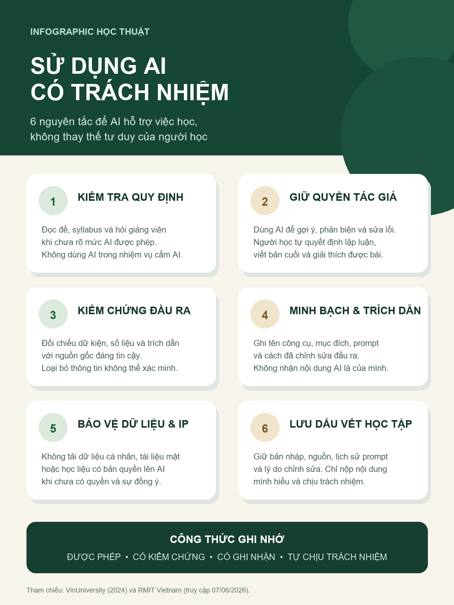

Phân tích chính sách
VinUniversity, đối chiếu RMIT Vietnam và UNESCO.
Bài tập 6 · Portfolio cá nhân
Phân tích chính sách, thực hành minh bạch, nhận diện vấn đề đạo đức và xây dựng nguyên tắc sử dụng AI trong học tập, nghiên cứu.
01 / Tổng quan
Bài làm bám sát sáu tiêu chí rubric và công khai đầy đủ việc sử dụng AI.
VinUniversity, đối chiếu RMIT Vietnam và UNESCO.
Prompt, đầu ra thô, đánh giá, chỉnh sửa và tích hợp.
Gian lận, sở hữu trí tuệ và tác động đến kỹ năng.
Sáu nguyên tắc thực tiễn gắn với các rủi ro đã phân tích.
02 / Nghiên cứu chính sách
Bài làm sử dụng Guidelines on Student Use of Generative Artificial Intelligence của VinUniversity, mã VUNI.83, hiệu lực ngày 05/09/2024. Chính sách cho phép khai thác lợi ích của AI nhưng đặt kết quả học tập và liêm chính học thuật làm giới hạn.
Điểm nổi bật là AI Assessment Scale gồm năm mức, từ không dùng AI đến khám phá AI. Cách phân tầng này gắn quyền sử dụng với mục tiêu từng bài thay vì chỉ “cấm” hoặc “cho phép”.
03 / Nhật ký AI
“Hãy hỗ trợ tổng hợp tài liệu thành một checklist 6 bước để sinh viên kiểm chứng đầu ra của AI trước khi sử dụng trong bài học thuật. Mỗi bước cần có một hành động cụ thể. Không tạo nguồn tham khảo, không khẳng định thông tin chưa được kiểm chứng và không viết thay phần phản ánh cá nhân của sinh viên.”
Cấu trúc sáu bước được giữ lại vì rõ ràng, nhưng đầu ra ban đầu thiếu bảo vệ dữ liệu và sở hữu trí tuệ. Nội dung này được bổ sung; các động từ chung được đổi thành hành động có thể kiểm tra như mở nguồn, hỏi giảng viên và lưu lịch sử prompt.
Không sử dụng nguồn do AI tự tạo. Các nhận định chính sách chỉ được giữ sau khi đối chiếu với website chính thức.
04 / Phân tích đạo đức
AI là hỗ trợ hợp lý khi được phép, không thay thế năng lực đang được đánh giá, có chỉnh sửa và người học giải thích được sản phẩm. Dùng AI làm thay rồi nộp như tác phẩm của mình làm sai lệch kết quả học tập.
Không tải tài liệu có bản quyền, dữ liệu mật hoặc bài của người khác lên AI khi chưa có quyền. Ghi nhận AI không thay thế cho việc dẫn nguồn gốc của dữ kiện và lập luận.
AI có thể giúp phản biện và sửa lỗi, nhưng phụ thuộc vào câu trả lời hoàn chỉnh có thể làm suy yếu đọc sâu, viết và tự giải quyết vấn đề. Chỉ nên nộp nội dung mình hiểu và có thể bảo vệ.
05 / Bộ nguyên tắc cá nhân
Được phép · Có kiểm chứng · Có ghi nhận · Tự chịu trách nhiệm
06 / Infographic

08 / Liêm chính học thuật
ChatGPT/Codex của OpenAI được sử dụng ngày 07/06/2026 để hỗ trợ lập dàn ý, tổng hợp điểm cần kiểm chứng, tạo bản nháp diễn đạt và thiết kế infographic. AI không được dùng làm nguồn chứng cứ.
Kiểm tra tìm kiếm nguyên văn với bốn câu đại diện không phát hiện kết quả khớp trên web công khai. Đây không phải báo cáo Turnitin và không thể bảo đảm tuyệt đối “0% trùng lặp”.
09 / Phản ánh cá nhân
Qua bài tập, tôi nhận ra minh bạch không chỉ là ghi tên công cụ AI ở cuối bài mà còn phải lưu prompt, kiểm chứng từng thông tin và giải thích được quyết định chỉnh sửa. Điều tôi thay đổi rõ nhất là không còn xem câu trả lời trôi chảy của AI như bằng chứng đáng tin cậy; mọi dữ kiện quan trọng đều cần được đối chiếu với nguồn gốc trước khi sử dụng.
10 / Nguồn tham khảo
{kind=link}